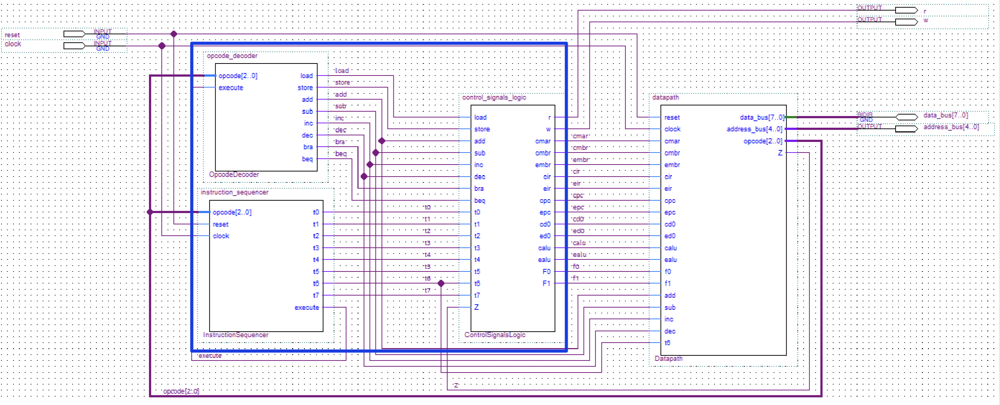

CPU Design Details
The architecture was built from both combinational and sequential components, which I designed, coded, and verified in VHDL.
Key modules included:
- ALU (Arithmetic Logic Unit): Implemented add, subtract, bitwise AND/OR/XOR, and shift operations.
- Registers: Small storage locations for temporary data.
- Control Unit: Directs the operation of the CPU and coordinates activities.
- Memory: Stores data and instructions for processing.
- Supporting Components: Multiplexers, demultiplexers, decoders, encoders, comparators, counters, and timers integrated into the datapath.
The diagram below illustrates the CPU's architecture, showing the interconnections between the decoders, sequencers, and datapath. (Squared in blue is the control unit)

Development Process
The CPU was developed using a structured approach:
- Design: Each component was first modeled in Quartus usign VHDL or circuit building.
- Verification: Conducted extensive testing using testbenches and simulation tools to ensure functionality and performance.
- Integration: Verified modules were connected to form the full datapath and control logic. The system was tested by executing simple programs that combined arithmetic, logic, and memory operations.
Experience Gained
This project provided hands-on experience in digital design, VHDL programming, and system integration. It enhanced my understanding of CPU architecture and the complexities involved in building a functional processor.
Key skills developed include:
- Digital system design principles and hardware description languages (VHDL).
- RTL simulation, verification, and debugging workflows.
- FPGA development tools (Intel Quartus II).